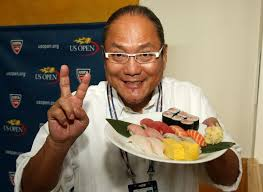

кулінарні традиції
про країну || на головну
Япо́нська ку́хня
(яп. 日本料理, にほんりょうり — ніхон рьорі; яп. 和食, わしょく — вашьоку) — національна кухня японців. Нематеріальна культурна спадщина ЮНЕСКО (з 2013). 
Рис
— японський хліб, без якого не можна помислити традиційний стіл. Культура вирощування рису стала частиною національного світогляду синто: ставлення до рису має сакральний характер. Вирощування цієї культури вимагає маси ручної колективної роботи. Вважається, що саме з цим пов'язана традиція жити великими сім'ями під одним дахом та займатися спільною працею. 
на головну